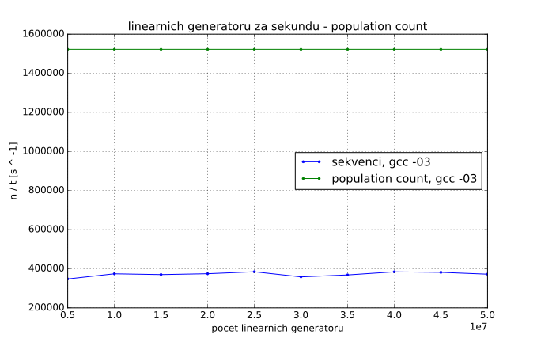

Mějme několik (G, pozor může to být i číslo v řádech miliónů!) daných
lineárních generátorů, každý z nich je dán parametry a, b, n. Generátor
vypočítává posloupnost x[i] = (a * x[i - 1] + b) mod 2 ^ n, kde a a b
jsou kladná lichá čísla, 10 < n < 32 a x[0] = 0. Počet členů této
posloupnosti je k (pro všechny generátory stejné). Úkolem je pro dané
konstanty c, d, e (pro všechny generátory stejné), najít:
x[i] v intervalu [c, d]x[i] a parametrem eSekvenci algoritmus se sklada ze dvou for cyklu. Vnejsi cyklus iteruje
pres vsechny linearni generatory G. G jsou ulozeny ve
dvourozmernem poli. V kazdem radku je trojice uint32_t cisel a, b a
n.
/* for each linear generator */
for (size_t i = 0; i < num; ++i) {
a = linear_generators[i][0];
b = linear_generators[i][1];
n = linear_generators[i][2];
x = 0;
count = 0;
min = UINT32_MAX;
max = 0;
Vnitrni cyklus pocita a zkouma jednotlive cleny posloupnosti x[k]
linearniho generatoru.
for (size_t j = 0; j < k; ++j) {
/* compute next value */
x = lin_gen(a, x, b, n);
/* check if x is in interval */
if (is_in_interval(x, c, d))
++count;
/* compute hamming distance */
dist = hamming_distance(x, e);
/* check minimal hamming distance */
if (min > dist)
min = dist;
/* check maximal hamming distance */
if (max < dist)
max = dist;
}
/* use computed values so compiler does not exclude them */
fprintf(stderr, "%" PRIu32 "%" PRIu32 "%" PRIu32, count, min, max);
}
lin_gen() pocita nasledujici clen posloupnosti. Pro umocneni
2 ^ n pouzivam operaci bitovy posun.
uint32_t lin_gen(uint32_t a, uint32_t x, uint32_t b, uint32_t n) {
/* don't care about overflow */
return (a * x + b) % (2 << (n - 1));
}
is_in_interval() provede dve porovnani a vrati true
pokud je x v zadanem intervalu jinak false.
bool is_in_interval(uint32_t x, uint32_t start, uint32_t end) {
return start <= x && x <= end;
}
hamming_distance() implementuje algoritmus pro ziskani
Hammingovy vzdalenosti z bitoveho or (^) promennych x a e
postupnym odebiranim bitu ve while cyklu. Tato implementace je datove
zavisla. Presto budu generovat data nahodne. Po optimalizacich bude
tato zavislost odstarnena.
uint32_t hamming_distance(uint32_t x, uint32_t y) {
uint32_t distance = 0;
uint32_t xor_val = x ^ y;
while (xor_val) { /* count the number of bits set */
++distance; /* a bit is set increment the counter */
xor_val &= xor_val - 1; /* remove the counted bit */
}
return distance;
}
Pro kompilaci programu pouzivam kompilator gcc. Zakladni kompilace pouziva nasleduji prepinace:
g++ -std=c++11 -march=ivybridge -O3 ...
-march=ivybridge zajisti kompilovani kodu pro vypocetni svazky Intel Xeon
2620 v2 @ 2.1Ghz. Toto nastaveni jsem zjistil prikazem:
gcc -march=native -Q --help=target | grep march
-march= ivybridge
| number of linear generators | time [s] |
|---|---|
| 5000000 | 14.376684 |
| 10000000 | 26.709448 |
| 15000000 | 40.509184 |
| 20000000 | 53.359419 |
| 25000000 | 64.964906 |
| 30000000 | 83.661873 |
| 35000000 | 94.967115 |
| 40000000 | 104.054127 |
| 45000000 | 117.829724 |
| 50000000 | 134.251642 |
V nasledujici casti popisu jednotlive optimalizece programu a analyzuji jejich dopad na vykonost vypoctu.
Vlozenim kodu funkci v tuto chvili neziskam zadne zrychleni, protoze -O3
nastaveni kompilatoru toto provede automaticky.
Kod pro vypocet Hammingovy vzdalenosti je neefektvni, protoze pouziva
while loop a netrva tedy konstatni dobu. Efektivnejsi implementace je
pomoci population count:
dist = x ^ e;
dist = dist - ((dist >> 1) & 0x55555555);
dist = (dist & 0x33333333) + ((dist >> 2) & 0x33333333);
dist = (((dist + (dist >> 4)) & 0x0F0F0F0F) * 0x01010101) >> 24;
Tento algoritmus vypocita Hammingovu vzdalenost 32 bitoveho integeru
(uint32_t) v konstantnim case. Tato optimalizace program zrychli v prumeru
ctryrikrat.


Program nevyuziva vektorovych instrukci procesoru. Vyuzite techto instrukci je
pro zrychleni zasadni. Kompilator instrukce nevyuziva kvuli datove zavislosti
x na predchozi hodnote ve vnitrim cyklu:
x = ((a * x + b) % (2 << (n - 1)));
Transformace loop interchange odstrani tuto zavislost. Vnejsi cyklus bude
iterovat pres jednotlive cleny posloupnosti x[i] a cyklus vnitri pres vsechny
linearni generatory. Bohuzel se pro nektere zhorsi vyuziti cache
pameti, protoze se parametry linearnich generatoru budou opakovane nacitat.

Vysledny kod vypada takto (parametry linernich generatu ukladam v jednorozmernych polich):
for (size_t i = 0; i < k; ++i) {
/* for each linear generator */
for (size_t j = 0; j < num; ++j) {
/* compute next value */
x[j] = ((a[j] * x[j] + b[j]) % (2 << (n[j] - 1)));
/* check if x is in interval */
if (c <= x[j] && x[j] <= d)
count[j] += 1;
/* compute hamming distance */
dist = x[j] ^ e;
dist = dist - ((dist >> 1) & 0x55555555);
dist = (dist & 0x33333333) + ((dist >> 2) & 0x33333333);
dist = (((dist + (dist >> 4)) & 0x0F0F0F0F) * 0x01010101) >> 24;
/* check minimal hamming distance */
if (min[j] > dist)
min[j] = dist;
/* check maximal hamming distance */
if (max[j] < dist)
max[j] = dist;
}
}